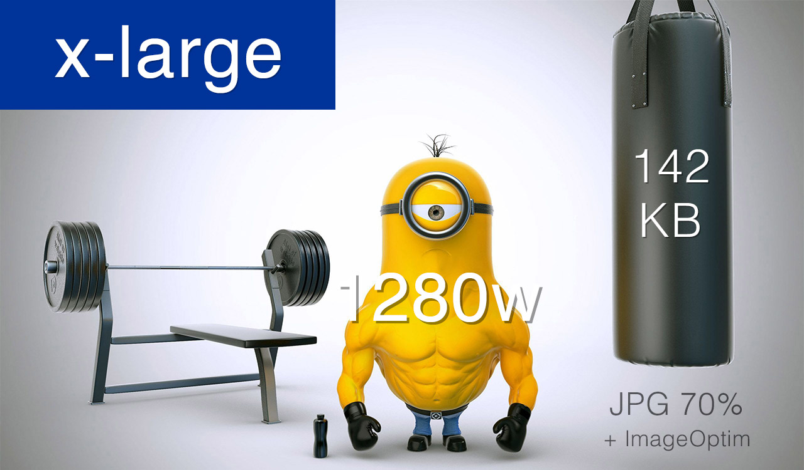
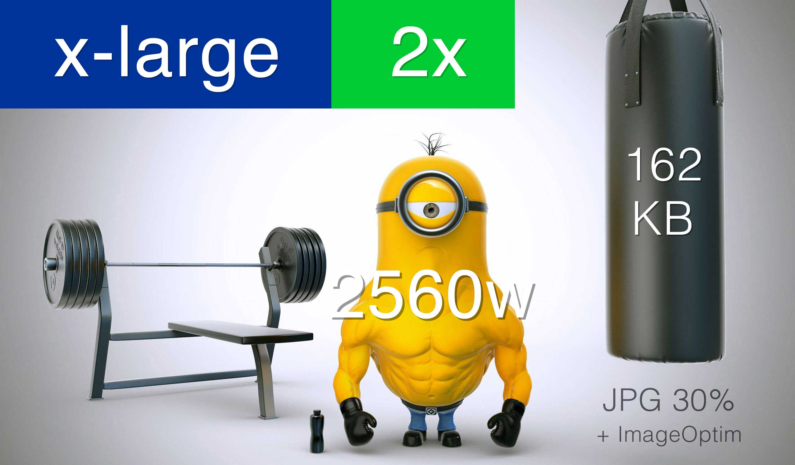
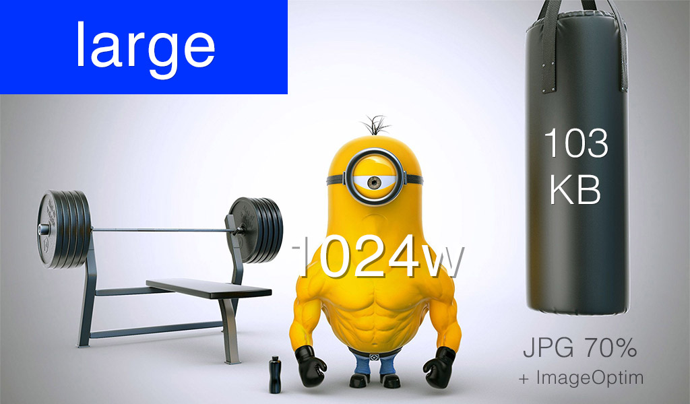
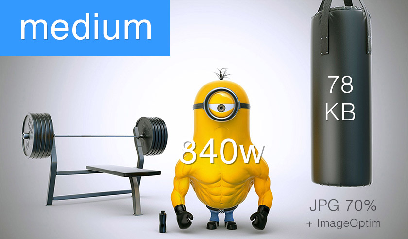
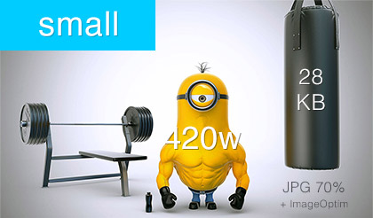

Bei Retina-Grafiken lässt sich zusätzlich noch Dateigröße einsparen.
Normales Bild

In Retina-Größe 370 KB
Retina-Bild

Nur 14% größer
Klingt seltsam
Dadurch, dass das Retina-Bild vom Browser auf Normalgröße skaliert wird, kann eine JPG-Qualität von 30% oder weniger in Photoshop ausgewählt werden, ohne dass dies zu sichtbaren Einbußen führt.
Zusätzlich kann mit Komprimierungstools wie ImageOptim noch einmal 5 - 10% eingespart werden (auch als Grunt Plugin erhältlich)
2. Möglichkeit:
Dem Browser mehrere Bilder bereitstellen
mit srcset w
Beispiel
Unsere Webseite hat 4 Breakpoints und eine Maximalbreite von 1280 Pixel.
Mobile Breakpoint: 420 Pixel
Tablet: 840 Pixel
Desktop klein: 1024 Pixel
Desktop groß: 1280 Pixel
In diesen Größen speichern wir unser Bild ab.
Und so binden wir das Bild mit srcset w in den 4 Größen ein:
Die w Angabe weist den Browser darauf hin, in welchen Breiten das Bild zur Verfügung steht, ohne dass dieser die Bilder herunterladen muss.

Einsparung 28%

Einsparung 45%

Einsparung 80%
Falls das Bild nicht den kompletten Bildschirm einnehmen soll, kann zusätzlich das Attribut sizes verwendet werden, um dem Browser mitzuteilen, in welcher Größe das Bild eingesetzt wird.
In Firefox sind picture, srcset und sizes ebenfalls seit Version 33 implementiert, müssen aber vom Benutzer über die about:config aktiviert werden, da noch ein Bug beim Laden des richtigen Bildes vorhanden ist
Microsoft denkt über eine Implementierung im IE nach
Apple hat sich noch nicht geäußert, Safari unterstützt derzeit nur srcset x
Für diese Browser kommt Picturefill.js zum Einsatz
picture basiert ebenfalls auf der srcset Logik, man kann aber zusätzliche Bedingungen angeben.
Damit lassen wir weiterhin den Browser entscheiden, welche Bildgröße für den aktuellen Viewport geeignet ist, auf Retina-Geräten geben wir ihm aber nur die optimierten JPGs zur Auswahl.
Unser vorheriges srcset Beispiel
funktioniert auch als picture Element
Wie wir picture source nutzen
Über das Attribut media können wir Bedingungen mit Media Queries definieren
Es können beliebig viele source Tags definiert werden
Der Browser analysiert sie der Reihe nach
Sobald eine Bedingung zutrifft, wird das entsprechende source verwendet
Für die Retina-Varianten unseres Bildes
fügen wir ein zusätzliches source Tag ein:
Der Retina Media Query
min-reolution dpi wird von allen Brwosern bis auf Safari unterstützt